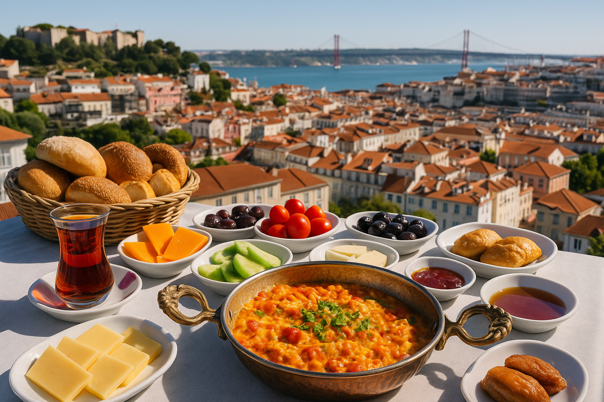

Gastronomy
We collaborate with a highly experienced Turkish chef to design authentic menus and live pop-up experiences. This partnership lets us serve seasonal tastes with refined techniques—keeping the soul of Turkish cuisine while making it accessible and exciting for Lisbon’s food lovers.
From hearty Turkish breakfasts to elegant dinners, our pop-up events celebrate regional flavors with a modern touch. Follow our announcements for upcoming tastings and limited-seat experiences.